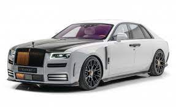

Rolls-Royce
>
>
>
>
>
 >
>
Cullinan
es un vehículo utilitario deportivo (SUV) de lujo de tamaño completo producido por Rolls-Royce Motor Cars . El Cullinan es el SUV único lanzado por Rolls-Royce, y también es el primer vehículo de tracción total de la marca . [4] Lleva el nombre del diamante Cullinan , el diamante en bruto con calidad de gema más grande jamás descubierto. [4] En los EE. UU., no está exento del impuesto sobre el consumo excesivo de gasolina porque está clasificado como una camioneta en lugar de un SUV.
Ghost
es un lleno-sized coche de lujo fabricado por Rolss-Royce Coches de Motor. El "Fantasma" nameplate, nombrado en honor del Fantasma de Plata, un automovilístico primero producido en 1906, estuvo anunciado en abril de 2009 en el espectáculo de Shanghái del Coche. El modelo de producción era oficialmente descubierto en el 2009 Motor de Fráncfort Espectáculo. El Ghost extendió Wheelbase estuvo introducido en 2011. Durante desarrollo, el Fantasma estuvo sabido como el "RR04". Esté diseñado como más pequeño, "más medido, coche más realista" que el Phantom, apuntando para una categoría de precio más baja para Rolls-Royce modelos.
Wraith
es un automóvil / gran turismo de lujo de tamaño completo fabricado por Rolls-Royce Motor Cars y basado en el chasis del Rolls-Royce Ghost , comparte su nombre con el modelo de 1938 de la compañía Rolls-Royce original . El estilo de la carrocería es un cupé de dos puertas sin columnas con icónicas puertas suicidas , donde todas las ventanas laterales se pueden bajar como en un convertible. Este estilo de carrocería fue popular en los automóviles estadounidenses durante las décadas de 1950 y 1960, y se conocía como el estilo de carrocería de techo rígido , no utilizado por Rolls-Royce desde 1955 .